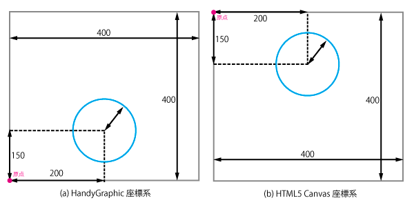

A simple javascript graphic library for graphics, apps and games
HandyGraphic.jsを使うためのチュートリアルです．
HandyGraphic.js は JavaScript のグラフィックライブラリです．HTML5 Canvas をベースにしているため，HTMLファイルのcanvasタグを利用します．そのため，HandyGraphic.js を用いて作成されたプログラムは，任意のWebサイトにcanvasタグを用いて組み込むことができます．
ユーザーはサーバにアップロードされた指定のHTMLファイルにアクセスすることで，プログラムの出力結果を確認することができます．
このチュートリアルでは最低限のHTMLとJavaScriptに関する基礎知識があることを前提としています．HTMLとJavaScriptの基礎知識に関してはこの資料では解説しないので，外部の資料を参照してください．
本チュートリアルでは，以下のファイル群を用いてチュートリアルを進めます．これらのファイル群は，同一のフォルダ内にあることを想定しています．ダウンロードは こちら からどうぞ．
本チュートリアルでは，作成したJavaScriptコードはHTMLファイルとは，別ファイル (main.js) として作成しています．そのため，HTMLファイル内のscriptタグから読み込んでいます．
以下に本チュートリアルで使用するHTMLファイルを示します．
<html>
<head>
<meta charset='utf-8' />
<meta name="viewport" content="width=device-width, user-scalable=no" />
<meta name="apple-mobile-web-app-capable" content="yes" />
<title>Getting Started | HandyGraphic.js</title>
</head>
<body>
<canvas id="canvas"></canvas>
<script src='handyGraphic.min.js'></script>
<script src='main.js'></script>
</body>
</html>
基本的に，サンプルコードは以下のテンプレートを前提にしています． そのため，動作に必要な変数宣言などを省略している場合もあります．まずは，以下のテンプレートをコピーしてから始めてください．
handyGraphic.globalize(); // handyGraphic.jsをグローバル展開する
window.onload = function () {
var Hg = new Graphic(); // Graphicオブジェクトを作成する
var win = Hg.Open(400, 400); // 描画するウィンドウを作成する
// 以降に処理を書いていきます．
// 図形の描画，Scene，Spriteの作成など
}
HandyGraphic で定義されているオブジェクトは名前空間によって管理されています．globalizeメソッドを用いることで，各オブジェクトをグローバル領域に展開することができます．ただし，各オブジェクト名がグローバル空間内で使用されていないことが前提です．
// globalize を実行しない var Hg = new handyGraphic.Graphic(); var win = new handyGraohic.Window(300, 300); var scene1 = new handyGraphic.Scene(); // グローバル領域に展開 handyGraphic.globalize(); var Hg = new Graphic(); var win = new Window(300, 300); var scene1 = new Scene();
まずは，HandyGraphic.js の図形描画機能を使ってみましょう．main.jsに以下のコードを記入してください．
handyGraphic.globalize();
window.onload = function () {
var Hg = new Graphic();
var win = Hg.Open(400, 400);
Hg.Line(100, 100, 300, 300); // 直線の描画
Hg.Circle(150, 150, 100); // 円の描画
Hg.Text(10, 380, "HandyGraphic"); // 文字の表示
}
index.htmlにアクセスしてみると，直線，円と"HandyGraphic"という文字列が表示されていることが確認できます．次の章ではまず，これらの描画が行われている Windowオブジェクト について説明します．
Window オブジェクトは，ウィンドウのインスタンスです． 描画処理に代表される画面に見える処理は，Window オブジェクトに対して行われます．Window オブジェクトは指定がない場合は"#canvas"のcanvasタグが指定されたものとして作成されます．
Window オブジェクトを複数作成する場合は，HTMLファイルにその数だけcanvasタグが必要になります．このとき全てのcanvasタグに対して異なるid名を割り当てる必要があります．
Window オブジェクトは以下のコードのようにして，作成することができます．
var win = new Window(400, 400); var win = new Window(400, 400, "canvas2"); // id名を指定して作成する
Window オブジェクトの作成は，次章で説明するGraphic オブジェクトの Open，WOpen メソッドによってラップされています．これらのメソッドはウィンドウを利用するにあたって必要な設定を内部で実行してくれています．そのためWindowオブジェクトは，Open, WOpenメソッドを用いて，作成することがベストプラクティスです．
作成したウィンドウの高さ・幅は以下のメソッドを実行することによって取得することができます．
var h = win.getHeight(); // ウィンドウの高さ var w = win.getWidth(); // ウィンドウの幅
描画処理を行う場合に，ウィンドウの大きさが必要になることがよくあります．
Graphic オブジェクトは基本的な図形の描画，文字の表示，描画設定の変更などをサポートしています．
Graphic オブジェクトの各機能は C言語版 Handy Graphic の描画機能を参考にしています． 変数名を Hg とすることで，C言語版の関数名と同じように扱うことができます． また，一部のメソッドは仕様が変わっているものもあるので，APIドキュメントを随時参照してください．
var Hg = new Graphic(); // 変数名を Hg にする Hg.Line(100, 100, 300, 300); // C言語版では HgLine(x0, y0, x1, y1) Hg.Circle(150, 150, 100); // C言語版では HgCircle(x, y, r)
HTML5 Canvas の仕様では，座標軸上の原点は画面左上に設定されています．C言語版の HandyGraphic では原点は画面左下に設定されているため仕様上の問題が生じます．
Graphic オブジェクトの描画機能は作成したウィンドウの左下を原点として図形描画を行います．そのため，C言語版のソースコードを手を加えずに移植することができます．
そのため，開発者は図形描画に関しては，原点位置の違いを考慮する必要はありません．
図形の描画を行う場合は，初めにGraphic オブジェクトを作成します．C言語版の関数名に似せるために変数名は Hg としていますが，異なる変数名を用いても問題はありません．このチュートリアルではGraphic オブジェクトの変数名は Hg で統一しています．
var Hg = new Graphic();
続いて，描画を行うために Window オブジェクト を作成します．Window オブジェクトの作成には Open メソッドを使用します．
var win = Hg.Open(400, 400);
Open メソッドを使用することで，Graphic オブジェクトが参照しているカレントウィンドウが設定されます．カレントウィンドウとは，ウィンドウを指定せずに描画メソッドを実行した場合に描画が行われるウィンドウです．
Open メソッドは実行するたびにGraphic オブジェクト内のカレントウィンドウが変更されることに注意してください．１つのウィンドウしか使わない場合は，ウィンドウの作成はプログラムの冒頭部分に一度行えば十分です．
var Hg = new Graphic(),
win = Hg.Open(400, 400);
Hg.Line(100, 100, 300, 300); // (100, 100) と (300, 300) を結ぶ線分を描画
Hg.Box(10, 10, 3, 5); // (10, 10) を左下隅とする幅3，高さ5の長方形が描画されます．
Graphic オブジェクトが持つ描画関数は基本的な図形描画をサポートしています．例えば，直線を描画する Line メソッド，長方形を描画する Box メソッドなどがあります．詳しくは Graphic クラス を参照してください．
ここまでの説明では，描画した図形は線だけの図形です．作成した図形を塗りつぶして描画したい場合には，塗りつぶした図形を描画するためのメソッドが用意されています．
Hg.Box(10, 10, 3, 5); // 線だけの図形を描画する． Hg.BoxFill(10, 10, 3, 5); // 塗りつぶし図形を描画する．
また，このように塗りつぶされた図形をこのチュートリアルでは，塗りつぶし図形と呼んでいます．これらのメソッドの詳細な説明は Graphic クラス を参照してください．
描画する図形の線と塗りつぶし色を変更したい場合は，SetColor メソッドと SetFillColor メソッド を使用します．
これらのメソッドを使用して，色を指定すると，別の色を指定するまで同じ色が使われます．一度も指定しない場合は黒で描画されます． 指定する色はCSSで指定するフォーマットに対応しています．
Hg.SetColor("red"); // 線の色を変更する
Hg.SetFillColor("red"); // 塗りつぶし色を変更する
// その他の指定方法
Hg.SetColor("rgb(192, 80, 77)"); // rgb(r, g, b) 指定
Hg.SetColor("#FF0000"); // カラーコード指定
Hg.SetColor(Hg.RGB(192, 80, 77); // RGBメソッドを使用
ウィンドウを指定して描画を行う場合は，WLine，WCircle メソッドなどを使用します． ウィンドウは，Open，WOpen メソッドを使用することで作成することができます． Open メソッドは実行するたびにカレントウィンドウが変更されるため，複数のウィンドウの作成には WOpen メソッドを使うことが推奨されています．
var win1 = Hg.Open(400, 400), // 400x400のウィンドウを作成
win2 = Hg.WOpen(300, 300, "canvas2"), // カレントウィンドウが変更されない
win3 = Hg.WOpen(100, 200, "canvas3");
Hg.WLine(win1, 100, 100, 300, 300); // win1 に描画
Hg.WLine(win2, 100, 100, 300, 300); // win2 に描画
Hg.WCircle(win3, 10, 10, 5); // win3 に描画
Scene オブジェクトは，描画単位を論理的に分割するためのものです．
ゲームやアニメーションなどを作成する場合は，描画処理が複雑になり，また規模も大きくなります． Scene オブジェクトを使うことで，描画処理をシーン単位で分割することで管理がしやすくなります． 例えば，ゲームを作成する場合は，タイトル画面，プレイ画面，スコア画面などの単位に分割することが考えられます． 当然のことながら，Scene オブジェクトは複数作成することができます．
Scene オブジェクトは以下のようにして作成することができます．
var scene1 = new Scene(); // Scene オブジェクトを作成する /* シーンの設定処理を記述する */ scene1.start(); // シーンの起動
Scene オブジェクトを利用する場合には以下のメソッドを，必要に応じて開発者が実装する必要があります．
awake メソッド は初期化処理など，シーン起動時に１度だけ実行される必要がある処理を記述します．シーン内変数は引数に与えた値で初期化が行われますが，再度シーンを呼び出した場合に前回の値を保持している問題があります．そのため，awakeメソッド 内で初期化処理を行うことでこの問題を解決することができます．シーン起動時に必要な処理がない場合はこのメソッドを実装する必要はありません．
update メソッド は座標の更新など，１フレーム毎に行う処理を記述します．update メソッド を利用することで簡単にアニメーションを実現することができます．また，次章で説明するシーン遷移は update メソッド 内で行うことが推奨されています．
draw メソッド はシーンの見栄えを実装するためのメソッドです．例えば，図形描画などは draw メソッド に記述するのが良いです．また，draw メソッドは update メソッド が呼ばれた後に実行されています．これは常に最新の状態を描画するために，先に update メソッド を呼び出しています．
var scene1 = new Scene({t : 0}); // 引数でシーン内変数を宣言する
scene1.awake = function () {
this.t = 0; // 起動時の処理
};
scene1.update = function () {
this.t += 1; // 更新処理
if (this.t >= 200) {
this.nextScene(scene2); // シーン遷移
}
};
scene1.draw = function () {
Hg.Clear();
Hg.Box(this.t, this.t, 5, 5);
};
scene1.start(); // シーンの起動
Sceneオブジェクトを作成する場合に，引数を与えることによって，シーン内変数を宣言することができます．これによりシーン内だけで必要な変数を定義することができます．正確に言うと，作成した Scene オブジェクト のプロパティとして宣言されます．
作成したシーンは start メソッドを呼び出すことで起動されます．起動したシーンは exit メソッド を実行するか，nextScene メソッド によってシーン遷移するまで繰り返し実行され続けます．
Scene オブジェクトには異なるシーンへの遷移が簡単に行える仕組みが実装されています．異なるシーンへの遷移は，起動中のシーンで nextScene メソッド を実行します．
var scene1 = new Scene({t : 0}); // 初めのシーン
scene1.awake = function () {
this.t = 0; // 起動時の処理
};
scene1.update = function () {
this.t += 1; // 更新処理
if (this.t >= 200) {
this.nextScene(scene2); // シーン遷移
}
};
scene1.draw = function () {
Hg.Clear();
Hg.Box(this.t, this.t, 5, 5);
};
var scene2 = new Scene(); // 次のシーン
scene1.draw = function () {
Hg.Clear();
Hg.Circle(200, 200, 10);
};
scene1.start(); // シーンの起動
この例では画面中央まで四角形が移動した後，画面中央に円が描画されるシーンが表示されます．このように簡単にシーン遷移を実装することができます．
これまでのチュートリアルからわかるように，Scene オブジェクトを使用することで簡単にアニメーションを作成することができます．基本的には画面に表示する図形などを draw メソッド に記述し，それらの図形を update メソッド を用いて状態を変化させることでアニメーションが実装できます．
C言語版の Handy Graphic には HgSleep(msec) という一定時間画面を停止させる関数が存在しています．JavaScript では HgSleep(msec) に相当する処理を行ってしまうとブラウザが停止してしまうことにつながるので使用することができません．そのため，C言語で作成したアニメーションを移植する場合には少し改変する必要があります．
Sprite オブジェクトは，図形や画像を表示するための視覚要素です． スプライトオブジェクトはStratgy，Commandデザインパターンを取り入れた実装になっています． それぞれのデザインパターンの詳細についてはこのチュートリアルでは深くは触れません．
スプライトは図形や画像を独立したオブジェクトして扱うためのものです．スプライトを利用することで図形や画像を１つのオブジェクトのように扱うことができます．スプライトの詳細は Sprite クラス を参照してください．
スプライトを構成する要素は大まかに分けると，ペインターとビヘイビアに分かれます．ペインターはスプライト自身を描画するためのオブジェクト，ビヘイビアはスプライトに振る舞いを与えるためのオブジェクトです．
ペインターとビヘイビアについては，以降の章で詳しく述べています．ここでは，単純なスプライトの実装例を示します．
var isFall = true,
ballPainter = {
paint: function (sprite, win) {
Hg.Clear();
Hg.CircleFill(sprite.x, sprite.y, 20);
}
},
ballToFall = {
execute: function (sprite, win, time) {
if (isFall) { sprite.y -= 1; }
if (sprite.y <= 20) {
isFall = false;
}
}
},
ball = new Sprite("ball", ballPainter, [ ballToFall ]);
ball.x = 150;
ball.y = 400;
var scene1 = new Scene();
scene1.update = function () {
ball.update(win, 1);
};
scene1.draw = function () {
ball.paint(win);
};
scene1.start();
上記のスプライトはボールを表現しています．ボールの見た目は ペインターオブジェクト により描画され，ボールが落下する振る舞いは ビヘイビアオブジェクト によって与えられています．
スプライトは自身を自分ではペイントせず，別のオブジェクトに委譲します． スプライトの描画はペインターオブジェクトを作成することによって実現します． これはStrategyデザインパターンの一例です． ペインターはスプライトの引数 painter としてスプライトに紐づけられます． ペインターの詳細はpaint メソッドに記載しています．
// ペインターの一例
var ballPainter = {
paint: function (sprite, win) {
Hg.Clear();
Hg.CircleFill(sprite.x, sprite.y, 20);
}
};
var ball = new Sprite("ball", ballPainter);
ball.paint(win); // スプライトを描画する
スプライトの振る舞いもスプライト内では定義せず，ビヘイビアオブジェクトを作成します． ビヘイビアはスプライトの振る舞いをカプセル化し，スプライトに対するコマンドのように扱われます． これはCommandデザインパターンの一例です． スプライトはビヘイビアを実行でき，ビヘイビアの配列を保持することができます． ビヘイビアの詳細はupdate メソッドに記載しています．
// ビヘイビアの一例
var isFall = true,
var ballToFall = {
execute: function (sprite, win, time) {
if (isFall) { sprite.y -= 1; }
if (sprite.y <= 20) {
isFall = false;
}
}
};
var ball = new Sprite("ball", ballPainter, [ ballToFall ]);
ball.update(win, time); // 落下の振る舞いを実行する